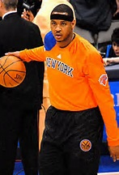

Carmelo Anthony
A New York Legend
Early Years

Born in Brooklyn and raised in Baltimore, Carmelo Anthony knew success at an early age. By the time he was 18 he was already the number one player in his recruiting class and the next year led his college team, Syracuse, to the NCAA Championship. He was then given the tournament's Most Outstanding Player award. Shortly after this success he decided that he would enter into the NBA draft. Before all of his success he came from humble beginnings. He grew up in a family where he was the youngest of 4 children and his father died early from liver failure. He was originally cut from his highschool team and had to work hard to get better and catch the coaches eye. By his junior year of highschool he had already commit to Syracuse.
NBA Career
Carmelo's draft class was one of the best in recent history with players like LeBron James, Dwayne Wade, and Chris Bosh all being selected. When the time came Carmelo was picked 3rd overall by the Denver Nuggets. During his rookie season he saw alot of success which included a 41 point game, setting a team record, and a unanimous selection to the NBA All-Rookie First team. He stayed at Denver until the 2010-2011 season, when he was then traded back to his college hometown team, the New York Knicks. To this day he still plays there and is trying to lead his team to the NBA Championship.
Stats and Big Moments
Carmelo has always been regarded as elite in the NBA. Some notable moments for him include:
- Scoring 62 points in Madison Square Garden, most by any player
- Beating the Bulls on Easter with 2 three-point shots at the end of regulation adn overtime
- Most gold medals ever won on an Olympic team
- 2013 NBA Scoring champion
- 6x All-NBA selection
- 9x NBA All-Star
- NCAA Champion
Carmelo was always a very prolific scorer but he also had many other stats (all stats are averages), here is a table that shows some key catagories to look at:
| Team |
Points |
Assist |
Rebounds |
Blocks |
| Denver (2003-2011) |
24.9 PPG |
3.09 APG |
6.39 RPG |
0.46 BPG |
| New York (2011-) |
24.8 PPG |
7.8 APG |
6.86 RPG |
0.47 BPG |
A much more detailed look at all of Carmelo's stats can be found at ESPN.COM